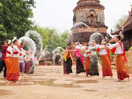
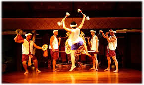
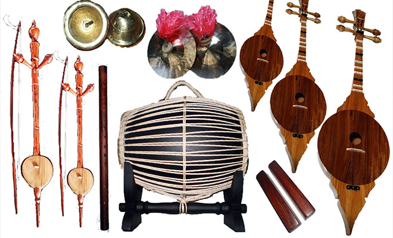
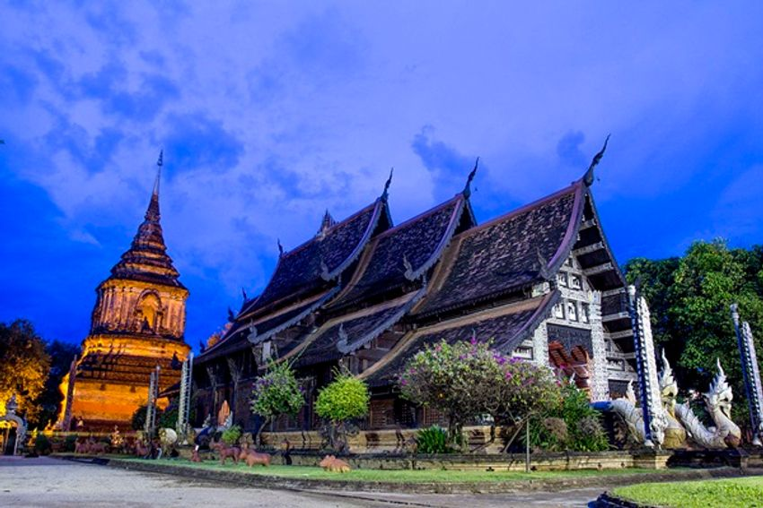
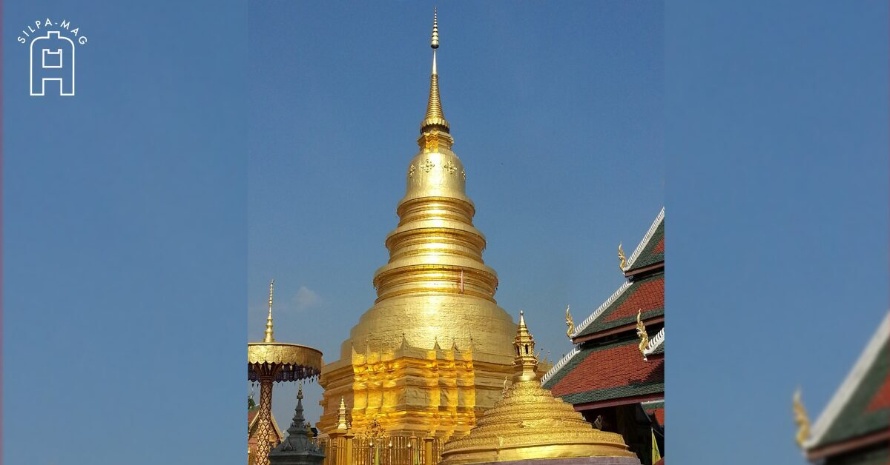

วัฒนธรรมและประเพณี
คุณลักษณะสำคัญของวัฒนธรรมล้านนา
- ศาสนา: ชาวล้านนาถือศาสนาพุทธศาสนาเป็นศูนย์กลางของชีวิต วัดและสถูปมีบทบาทสำคัญในสังคม
- ภาษา: ภาษาล้านนาเป็นภาษาท้องถิ่นที่แตกต่างจากภาษาไทยกลาง มีเสียงสละสลวยและอ่อนนวล
- ชุมชน: ชุมชนล้านนาให้ความสำคัญกับการช่วยเหลือซึ่งกันและกัน การรวมตัวของชาวบ้านนั้นสำคัญมากในการทำกิจกรรมต่างๆ
- การจัดการน้ำ: ระบบขุดคันวัง (คนขุด) ที่ใช้ประมาณสองพันปีมาแล้ว เป็นจุดเด่นของวิศวกรรมชาวล้านนา

ประเพณีบุญสงกรานต์
วันสงกรานต์เป็นเทศกาลสำคัญของชาวล้านนา ที่ใช้รดน้ำสาดสักทับแก่ผู้อาวุโส และสรุปน้อย ถือเป็นวันฟื้นฟูความสัมพันธ์ของครอบครัว

สัตหลวะ
การแสดงศิลปะพื้นบ้านล้านนาที่ประกอบด้วยการร้องเพลง การเต้นรำ เป็นการรำลึกถึงภูมิหลังของชาวล้านนา

ดนตรีล้านนา
ขิม เปียง ซิ่น แน่ว ฯลฯ เครื่องดนตรีพื้นบ้านที่สร้างเสียงโทนสระหวาน ให้ความรู้สึกหวนหนึ่งใจ
สถาปัตยกรรมล้านนา
สถาปัตยกรรมล้านนาสะท้อนให้เห็นถึงความเป็นเอกลักษณ์ของศิลปะและการออกแบบที่ผ่านการหลั่งไหลของอารยธรรมหลากหลายในเวลาอันยาวนาน

วัดประเมินธรรม
วัดที่มีสถาปัตยกรรมสไตล์ล้านนาแท้ที่สุด มีหลังคาชั้นขั้นสูง หลังคาคดโค้ง ลูกศรชี้ฟ้า เนื้อหาศิลปะบ้านเรา

บ้านล้านนาดั้งเดิม
บ้านไม้สูงจากพื้นดิน มีหลังคาวรรครูป ระเบียงเปิดโล่ง สะท้อนการปรับตัวต่อสภาพอากาศและวิถีชีวิตของชาวบ้าน

สถูป
สถูปล้านนามีหลากหลายรูปแบบ บางตัวสูงโปรงโผ่วไปท้องฟ้า เป็นศูนย์รวมใจของชาวบ้านและเป็นสัญลักษณ์ของความศรัทธา